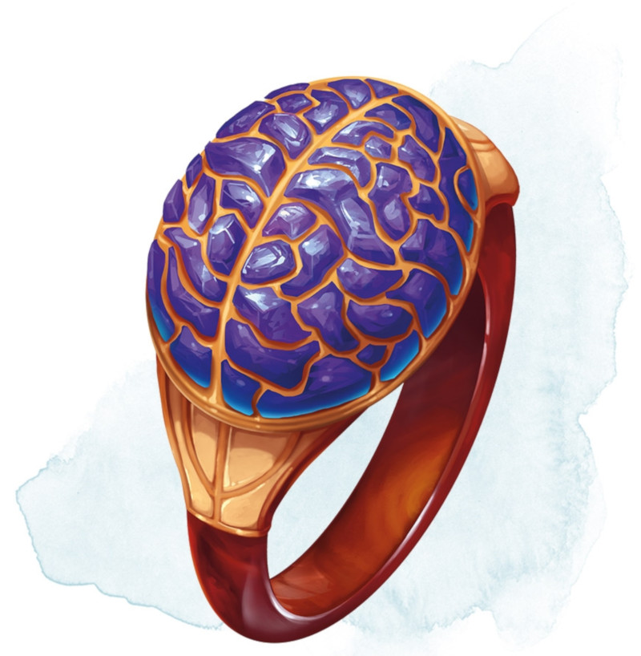

Ring of Mind Shielding
Ring, uncommon (requires attunement)
While wearing this ring, you are immune to magic that allows other creatures to read your thoughts, determine whether you are lying, know your alignment, or know your creature type. Creatures can telepathically communicate with you only if you allow it.
You can use an action to cause the ring to become invisible until you use another action to make it visible, until you remove the ring, or until you die.
If you die while wearing the ring, your soul enters it, unless it already houses a soul. You can remain in the ring or depart for the afterlife. As long as your soul is in the ring, you can telepathically communicate with any creature wearing it. A wearer can't prevent this telepathic communication.
You can use an action to cause the ring to become invisible until you use another action to make it visible, until you remove the ring, or until you die.
If you die while wearing the ring, your soul enters it, unless it already houses a soul. You can remain in the ring or depart for the afterlife. As long as your soul is in the ring, you can telepathically communicate with any creature wearing it. A wearer can't prevent this telepathic communication.
Dungeon Master´s Guide (SRD)
